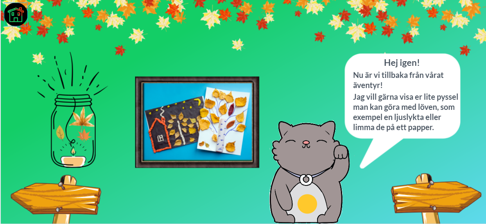
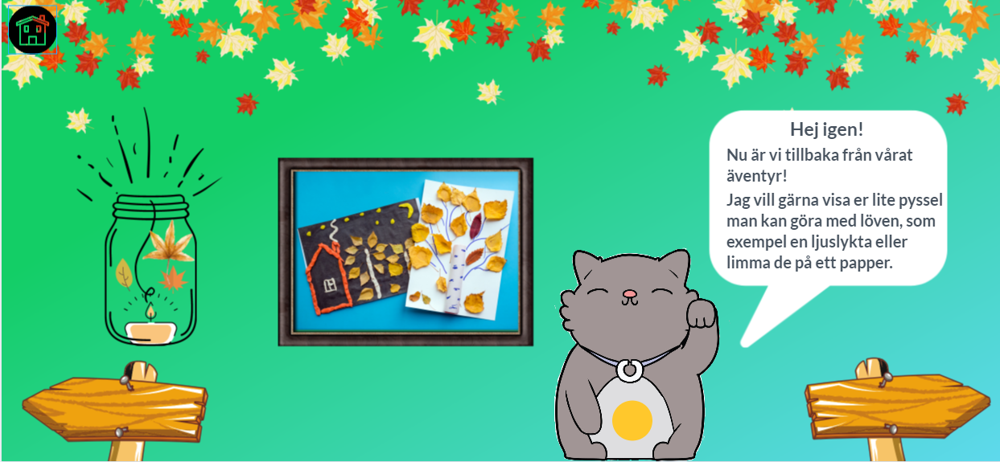

Design Sprint

 


Information
- Prototyp i Marvelapps
- Design Sprint PDF
- Datum: September, 2020
- Introduktion till UX-design: Grupparbete i vår andra kurs på utbildningen
Om projektet
Detta är första projekt/grupparbete vi har fått göra på ECutbildning, UX-Design När vi brainstormade kom jag med idén som vi bestämde oss för att jobba vidare med, digitalitet, barn och verklighet. Skapa en lärorik app som låter användaren (barnen) vara producent i sin interaktion med digitala verktyg, samt möta verklighet och digitalitet. Se hela processen Design Sprint PDF.
Min roll i projektet:
Jag var decidor och även upplevde att jag blev projekt ledaren när vi jobbade tillsammans.
Problemet
- Digital kompetens i förskolan är nytt mål i läroplanen (2019).
- Det finns många pedagoger som är osäkra och inte kompetenta i att använda digitalitet och verktygen för utbildningssyfte.
- Digitala verktyg används oftast bara inomhus.
- Lärplatta används mer än mobilen.
- Mer fokus på skärmen än att koppla och skapa balans mellan digitalitet och verklighet.
Prototyp & Test
Jag som decidor valde dessa tre utav fem sketcher. Mitt motiverande val blev intro > aktiviteter > innehållsstruktur i en aktivitet.
- Första bilden följer den tanken vi hade om en animerad karaktär som ska följa med i appen med viktiga funktioner.
- Andra bilden visar hur appen ska fungera i val av aktiviteter.
- Tredje bilden visar hur vi kan strukturera och designa innehållet i en aktivitet. Instruktion > utförande > inspiration/avslut.
Inspiration till prototyp:
Slutmålet & Design
Vi ville skapa en UI och bättre interaktion till våran presentation. En färgrik och lekfull design, med blå och grön i vårat fokus. Jag designade alla bilder i Canva.com och här är slut resultatet i Marvelapps.
Vår prototyp erbjuder barnen ett lärorikt alternativ i sin interaktion med digitala verktyg och de blir producenten i användningen, samt möter digitalitet och verklighet. Pedagogerna får ett verktyg de kan använda sig utav som kräver mindre förberedelse och kan på ett roligare sätt utbilda barnen i digital kompetens redan i tidig ålder. Istället för den stora fokusen på lärplatta och inomhus, kan vi nu erbjuda en bra lösning till att använda mobilen och utemiljön också.
Kommentarer från intervjuer (pedagoger i förskola):
- "Detta är som en extra pedagog för barnen. Ibland är man faktiskt trött eller inte kreativ till att hitta på aktiviteter med barnen."
- "Vi använder endast digitala verktyg inne för att de inte ska gå sönder ute, som t.ex regn, tappar den i marken, solen bländar"
- "Denna app hade varit värdefull för oss som jobbar i utegrupp. Det är svårt att jobba med digitala verktyg ute"